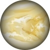

Venus
Venus is the Second planet from the Sun in Your Solar System. It is the closest planet to Earth. It is similar in size to Earth, but has a thick, toxic atmosphere that is continuously shrouded in thick clouds of sulfuric acid. Venus is the hottest planet in Your Solar System. Venus has no moons.